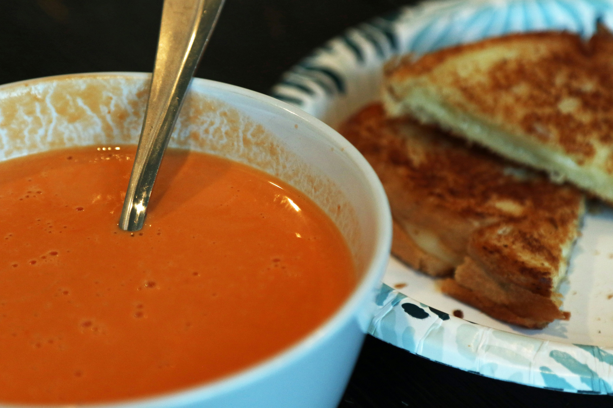

Home
Tomato Soup

Photo by David Trinks
on Unsplash
Ingredients
- 500g tomatoes
- 1 red onion
- 1 red bell pepper
- 1 garlic bulb
- 0,5l chicken stock
Steps
- Preheat oven to 200-220C
- Chop up your tomatoes, onion, and bell pepper into rough chunks
- Cut the top of the garlic head off, and wrap it in aluminum foil with some oil
- Spread out everything on a baking sheet, salt and pepper to taste, and roast in the oven for ~30 min, until the veggies are soft
- Blend everything in a pot with an immersion blender, or in a blender that can take some heat
- Simmer to reduce until wanted consistency
- Enjoy on its own or with some nice grilled cheese